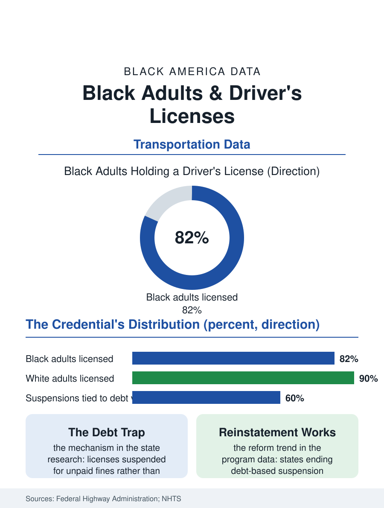

Black Census
The Key to the Job: Black Adults and Driver's Licenses
The license is a job qualification, an identity document, and a debt-collection hostage, and Black adults hold it at lower rates with suspensions driven by fines. The license file.

The driver's license is the closest thing America has to a universal identity credential, and the right to drive is woven into employment so tightly that the license functions as a job qualification across most of the labor market. Black adults hold licenses at lower rates than white adults, roughly eight in ten against nine in ten in the survey data, with the gap concentrated among young adults and city residents. This article reads the license file, part transportation, part identification, part debt story.
Who Is Licensed, and Who Is Not
The Federal Highway Administration's licensing counts and the household travel surveys draw the file's map. Licensing rises with income, suburban residence, and age into middle life, and the Black-white gap, persistent across the series, is widest among adults under thirty, where the cost stack of licensure is steepest: driver's education, where it is no longer offered free by the school, the vehicle for the road test, the insurance premium quoted for a young Black man in the rating data, and the documentation chain itself. The urban exemption is real: in the transit-rich cores, a substantial share of Black adults live licensed-less by choice and without penalty, a population the file distinguishes carefully from the unlicensed of the car-dependent South and suburbs, for whom the missing license is a labor market exile, since the job files' geography, the warehouse and hospital and construction site at the freeway's exit, assumes the drive. The gender split carries its own history: Black women's licensing has converged toward men's across the generations, the elder cohorts' gap, when the household's one license was the husband's, closing in the current data to a remnant.
Suspension: The Debt Trap on Wheels
The file's darkest chapter is suspension, and it is a debt story before it is a driving story. The legal and transportation research of the last decade, state by state, established that a large share of licenses are suspended not for dangerous driving but for unpaid fines, fees, and child support, court debt collected through the license because the license is the one asset the state can hold hostage that every debtor needs. The suspension data by race are stark wherever states publish them: Black drivers suspended at multiples of their population share in city after city, and the mechanism then compounds, since driving unlicensed to the job the license was needed for produces the arrest and the deeper debt, a cycle the policy literature names with unusual unanimity across the political spectrum. The reform file is substantial and recent: states and cities have moved to end debt-based suspension, reinstate licenses by the hundreds of thousands in the largest programs, and decouple the credential from the collections office, with the early outcome data showing reinstated drivers returning to the legal workforce and the insurance rolls. The safety-based suspension, the DUI and the reckless record, stands on different ground in every analysis, and the reform's precision in separating the two is its defining feature.
The Credential Beyond the Car
The license's second job, as the nation's default identity document, ties the file to the civic record: the states' voter identification laws made the license a franchise document, and the unlicensed population's alternative IDs became a voting access question the courts have weighed for a decade; the REAL ID era raised the documentation bar for the license itself, the birth certificate and proof-of-residence chain that the displacement and housing instability files show falling hardest on the poor. Employment screening adds the commercial layer: the clean driving record as a hiring filter extends well beyond driving jobs, and the license's status functions in the background check economy as a proxy whose racial distribution imports the suspension file into the hiring file. The license file closes at the DMV counter, the most universal point of contact between the citizen and the state in American life. The data describe a credential that is at once a key to the labor market, a hostage of the debt system, and a ballot document, held by eight in ten Black adults and missing, suspended, or priced away for the two whose need of it is frequently the greatest. The reinstatement numbers in the reform states are the file's hopeful trend line, each one a worker returned to the legal economy by the simple recognition that a license suspended for poverty mostly punished the working.
More in Black Census
The Black Population of the United States: Size, Definitions, and Distribution
The Black population of the United States totals 52.8 million — 15.4 percent of the nation. How the Census Bureau defines and counts the population, and where it lives.
Black Median Household Income in the United States
Black median household income stands at $56,490 in the Census Bureau's annual income report — how the figure is measured, how it compares, and what drives it.
The Black Poverty Rate: Levels, Children, and the Long Trend
The official Black poverty rate is 17.1 percent — against 11.1 percent nationally and 7.7 percent for non-Hispanic White Americans. How poverty is measured and what the data show.
Source: Federal Highway Administration highway statistics; National Household Travel Survey; state license suspension studies and reinstatement program data.